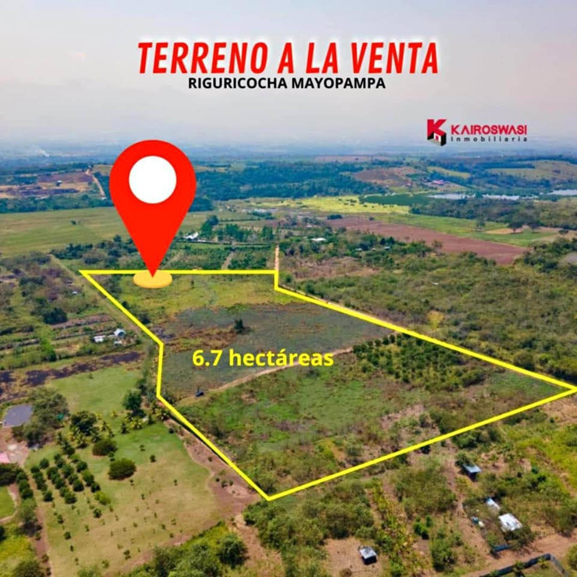

PEN1,200,000 6.7 ha

𝙑𝙀𝙉𝘿𝙊 𝙏𝙀𝙍𝙍𝙀𝙉𝙊 EN 𝙈𝘼𝙔𝙊𝙋𝘼𝙈𝙋𝘼 - 𝙈𝙊𝙍𝘼𝙇𝙀𝙎 (6.7 Has) “𝘿𝙄𝙎𝙋𝙊𝙉𝙄𝘽𝙇𝙀 𝙋𝘼𝙍𝘼 𝙇𝙊𝙏𝙄𝙕𝘼𝘾𝙄𝙊𝙉 - SECTOR 𝙍𝙄𝙂𝙐𝙍𝙄𝘾𝙊𝘾𝙃𝘼" 📍 Ubicado Sector Mayopampa / Morales 🌎 𝗚𝗼𝗼𝗴𝗹𝗲 𝗠𝗮𝗽𝘀 https://maps.app.goo.gl/KTsorw2gtAu3S3Tu9 𝘾𝘼𝙍𝘼𝘾𝙏𝙀𝙍𝙄𝙎𝙏𝙄𝘾𝘼𝙎 🔶 📐 Área del Terreno 6.7 hectáreas. 🔶 🕓 A 10 minutos del mercado Santa Anita - Morales. 🔶 Energía eléctrica en la zona. 🔶 Partida electrónica y Autovaluo 2026. ▪️𝘼 500𝙢𝙩𝙨 𝙙𝙚 𝙡𝙖 𝙇𝙖𝙜𝙪𝙣𝙖 ▪️Terreno 𝙏𝙤𝙩𝙖𝙡𝙢𝙚𝙣𝙩𝙚 𝙥𝙡𝙖𝙣𝙤 𝘼 𝙛𝙞𝙡𝙤 𝙙𝙚 𝙘𝙖𝙧𝙧𝙚𝙩𝙚𝙧𝙖 📽️ 𝙑𝙞𝙙𝙚𝙤 𝙙𝙚